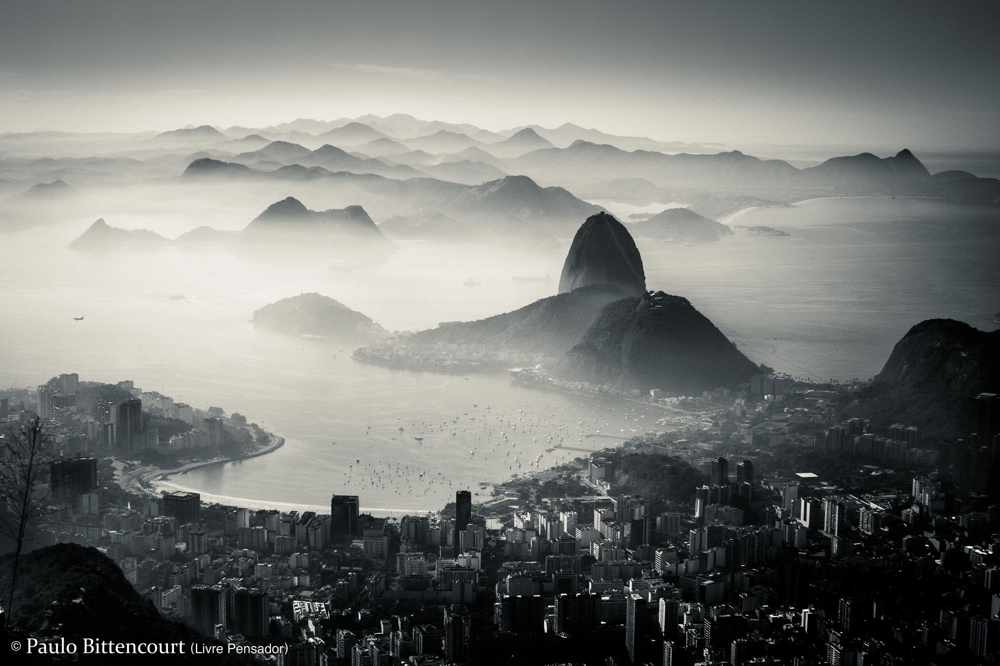
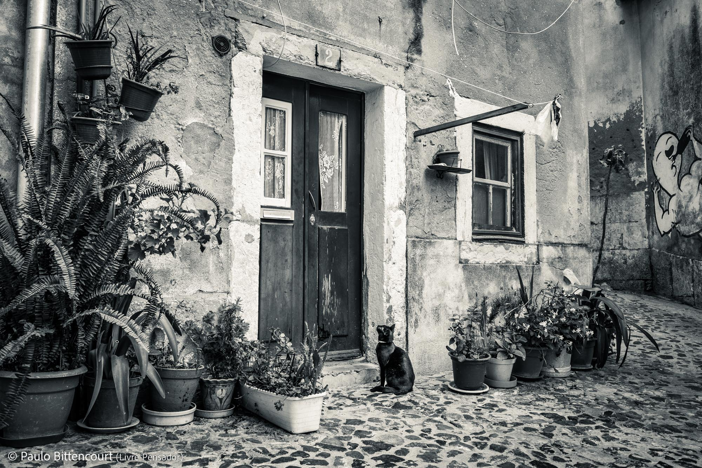
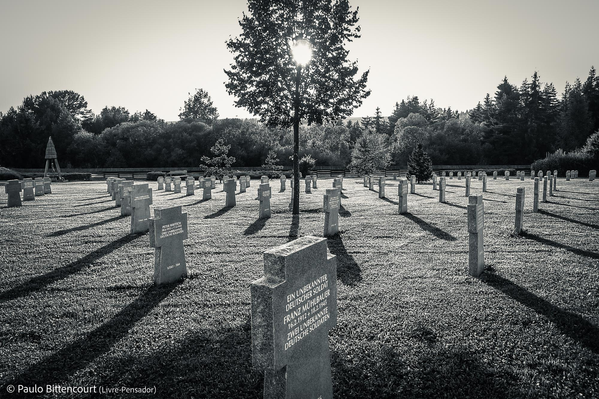
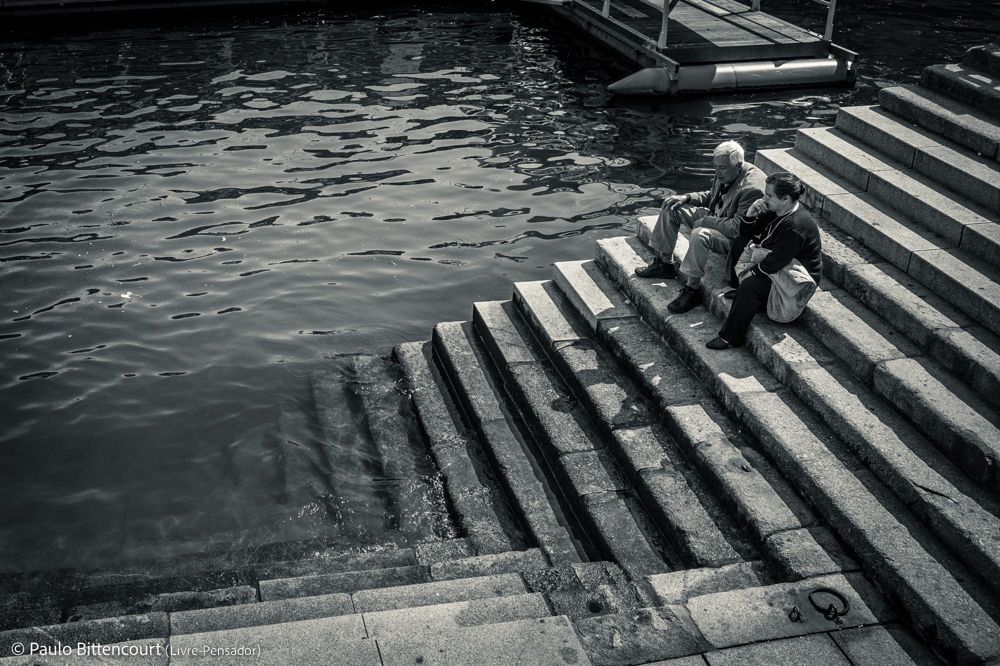
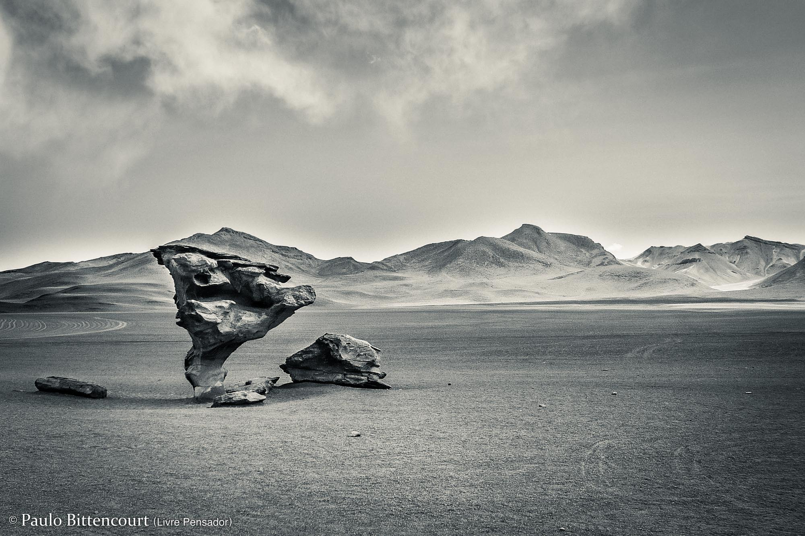

As Fotografias de Paulo Bittencourt
Depois da música, minha maior paixão é a fotografia. Comecei a fotografar com 13 anos de idade. Na parte da tarde, eu trabalhava de office-boy no jornal da minha cidade natal. Eu era responsável também por tirar e revelar as fotos publicadas nele. Quando o então governador do Paraná, Ney Braga, visitou Castro, tirei uma foto dele (que então saiu na primeira página). Admirado, ele se aproximou, deu-me um aperto de mão e perguntou quantos anos eu tinha.
Esta é uma seleção das minhas fotografias, tiradas nos Açores, Áustria, Bolívia, Brasil, Escócia, Eslováquia, Espanha, Hungria, Portugal, República Tcheca e Rússia. Clique nelas para ampliá-las.
Rio de Janeiro, Brasil
Lisboa, Portugal
Tatra, Eslováquia
Porto, Portugal
Atacama, Bolívia